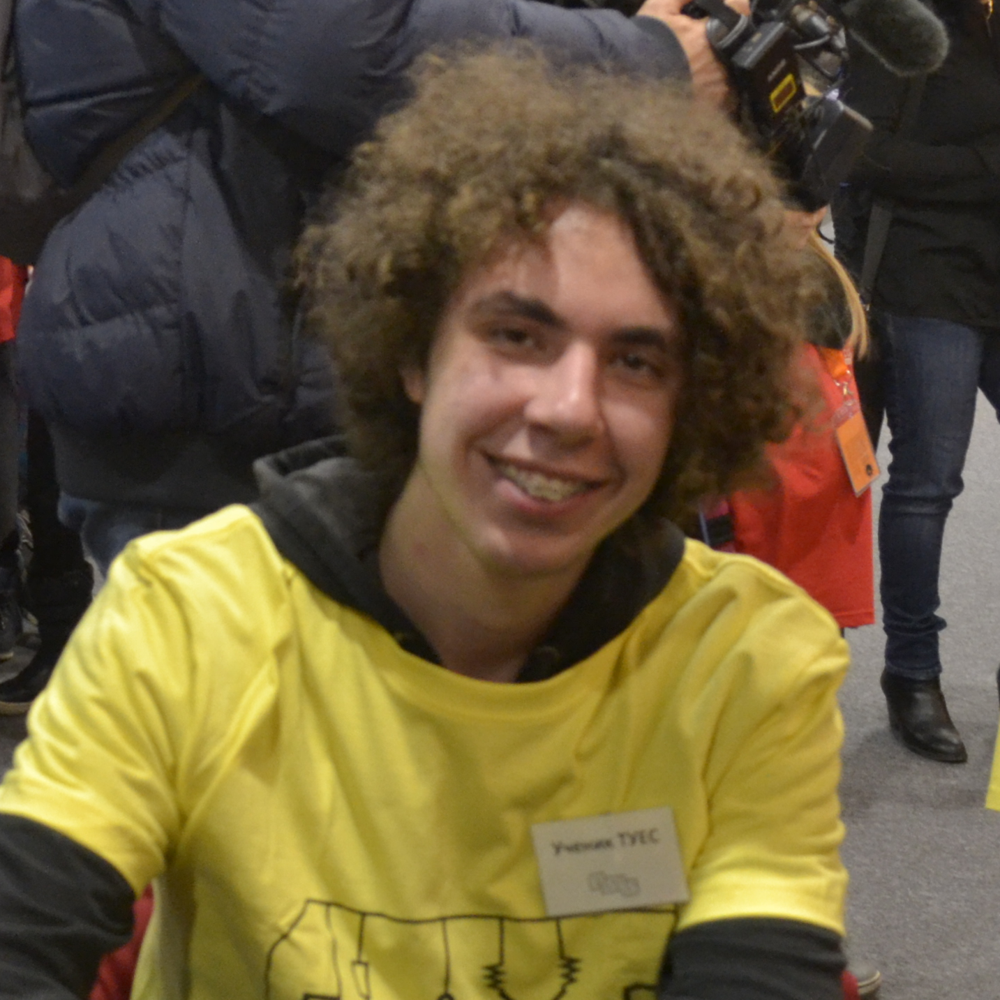

Vladimir Vladinov
Being currently a student in 11th grade in ELSYS Vlado's work is often associated with many of Kaloyan's homeworks. When he's not earning his sobranie or working on his other projects (Mitov and Vitanov) he can be mostly seen going out with frineds into unknown locations and returning hours later in questionable health state. After probably finishing the 12th grade Vlado's ambition is to stay alive at least until 2019 when Shrek 5 will be released and will finally give his life a meaning.

|  |
Viktor NaychevBeing also a student in ELSYS and sharing a class with Vlado, Viktor is widely known for his tobacco obsession and alcohol fascination. Being the generous person he is, most of his hard-earned money go towards the Bojkov foundation helping others in need. In 2 years' time if he hadn't committed suicide yet his guitar playing skills will finally come in handy and by earning his own money in some podlez he might finally make his parents feel some kind of proudness. |